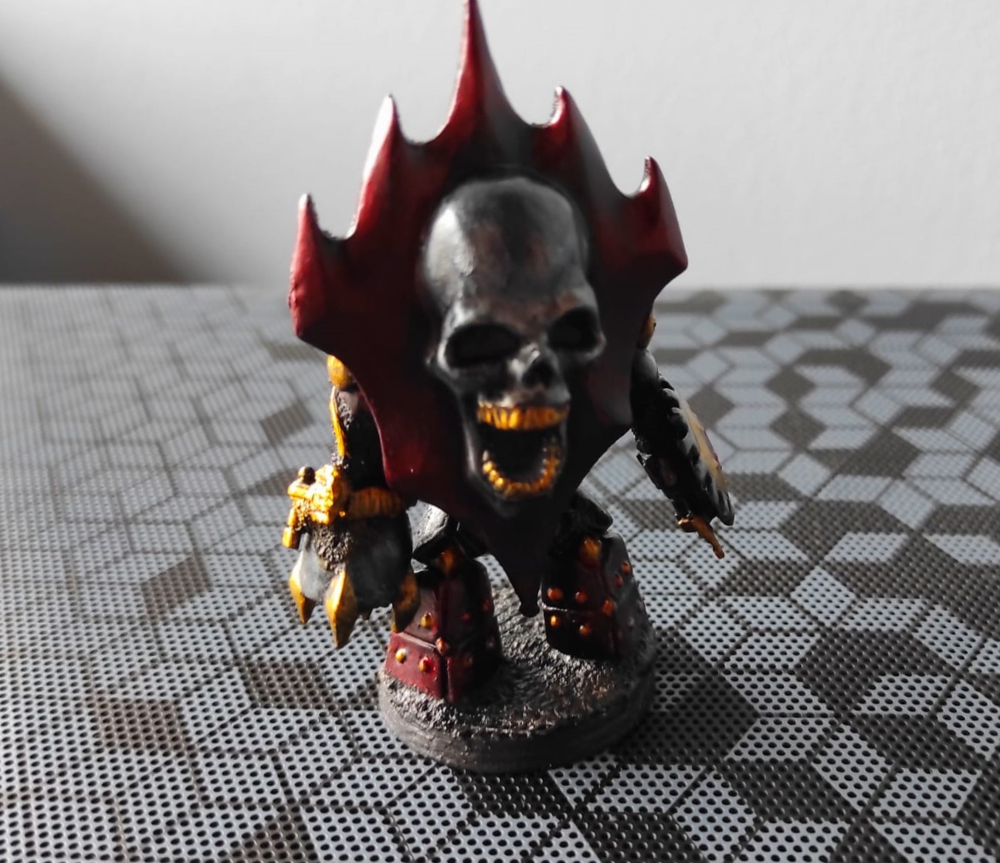

(if the page breaks, click HERE)
⏪ go back
üñåÔ∏èPaint your first miniature!üñåÔ∏è
a multi-path tutorial/adventure!
There are millions of ways to paint your first mini, i'll let you choose which method to use, with some suggestions along the way!
(There will be multiple "what you'll need" lists, depending on the path you'll follow! (Dw it's easy stuff)
What you'll need:
- SUNLIGHT (or a good lamp)
- A small soft brush (doesn't change if it's pointy or not)
- A very small, soft and pointy brush, for details
- A plastic container you don't need (optional, read step 1)
- Baking paper + a piece of cloth or a paper towel (optional, read step 1)
- A surface to paint on
- A surface to put paint on (plastic plates, metal tins...)
- Water + a cup you don't use or smt to store water in
- A cheap black or white (or another color) spraycan, or brush-on primer (read step 2)
- Some good acrylic black and white paint (read step 2.5)
Step 1): diy your wet palette (optional but recommended)
I use a cheap cutting mat as my "surface to paint on"
Wet palettes are surfaces that don't dry your paints! They make thinning and blending easier, there's no reason to not use one!
P.s. after a couple of days your acrylics will become unusable, they are meant to survive for a single painting session!
to make your wet palette:
- Put some paper or a piece of cloth into the plastic box
- Soak it in water
- Remove the excess water
- Apply the baking paper on top
- Easy as that! Remember to replace the paper / cloth before it starts to mold, and the baking paper when it's full of paint!
Step 2): prime your miniatures!
I'll paint those with my gf :), this tutorial will focus more on the gengar pin!
"Priming" a mini means spraying a layer of strong paint that sticks to plastic, metal and other stuff. You can use a cheap rattlecan (OUTSIDE!!!),
some brush-on primer (more expensive but indoor-friendly) or an airbrush with some fancy primers (not suggested to start with, but cool to have if you enjoy the hobby)
Don't soak your mini in paint! Too much and you'll lose all your details!
> But Ema, which color should i choose?
That's a good question! idk why i 4-channed you, a loose rule is:
- If you want a cartoony, bright result, or your mini has a lot of "light" colors (yellow, white, beige) 👉 prime with white
- If you have to paint a ton of minis with the same color 👉 use that color (example, you want to speedpaint a whole army)
- For 99% of your minis 👉 prime them black, or grey if you don't want them to end up too dark
Cool! Here's your first choice, the destiny of the multiverse depends on you:
- Use a rattlecan, go to step 2.5)
- Use a brush-on primer, go to step 3)
Step 2.5): fix stuff, then go to step 3)
The illusion of free choice...
The rattlecan will prob. not reach all the recesses of your mini, instead of soaking it in acrylic paint, let's manually fix those spots!
apply some [same color of your primer] paint on your wet palette, wet your brush with some water, move the paint a bit and start painting!
- If the paint is too thin, it will move around and be too transparent
- If the paint is too thick, it will leave textures and ugly blobs
- Too thin >>> too thick, you can apply more paint once the layer has dried!
> But Ema, which paint should i use?
I recommend using paint meant to work on miniatures, the cheap acrylics usually leave textures and are too transparent. Don't be a cheapass here, bad paints will ruin your paintjobs!
(Also, if you have them avaible, pick miniature paints in dropper bottles, pots (like Citadel's) S U C K!)
Some good brands: Vallejo (my fav!), Army painter, Citadels, Reaper...
Step 3): decide which method to use
 Fun fact: those minis use both methods i'll show you
Fun fact: those minis use both methods i'll show you
There are two braindead beginner-friendly* methods to paint minis. I'll let you choose which one you prefer!
PLEASE🙏, don't stick with them for the rest of your life! I painted ~50 minis with the first one without trying new stuff or improving, Burned myself out 🔥
for no reason and almost quitted. Experimenting is the most fun part of the hobby!
- The traditional method 🤶: basecoat > wash > highlight. It's the easiest, requires the least monetary investment, but the results look "safe" and booooring.
Still, the more complex stuff relies on knowing those 3 steps, so it's useful to learn how it works!
- Slapchop 🧤: it's the new shit in mini painting, everyone talks of it because it's free views on yt. I think it's overrated on it's own, and requires
a set of specific paints, but it's fast, the results are cool and (with some extra twists) it's the main method i use on my cryptids!
Step 4.🤶): basecoat stuff
Here your mini will look like shit and you'll feel bad, DW it's part of the process!
What you'll need:
- Good acrylic paints for all the colors you want to use (read the rest of this step)
- Oil paints + white spirit, or a good acrylic wash (read step 5.🤶)
Literally paint within the borders of your mini. Pick some colors you want and-
> But Ema, which colors should i choose?
LET ME FINISH!!! But fair, pick a color you like and google (or better, duckduckgo) a color wheel:
- You could use your color and it's opposite (for example: red and green)
- You could use your color and divide the wheel in 3 parts to make a triad (for example: red, blue and light green)
- You could use your color and other colors next to each others (for example: red, orange, purple)
- ...Or tell the color theorists to go fuck themselves and pick whatever you like!
Then, apply an even coat of all your colors!
- Remember than multiple thin coats are better than a thick one!
- If you can't paint a spot of your mini (and you primed it black or grey), you can leave it as 👻free shadows!👻
- Speaking of shadows, after you paint some minis, you could basecoat the new ones with a cool tech called overbrushing,
it's like drybrushing but with a bit more (wet) paint, the results are megacool!
...if you have no idea what drybrushing means, check step 4.🧤)
Step 5.🤶): wash stuff
 Don't actually "wash" your mini, you'll ruin the paintjob!
Don't actually "wash" your mini, you'll ruin the paintjob!
Washes, or talent in a bottle, are the easiest way to shade a mini, taking advantage of the THIRD DIMENSION!
before laughing at your 2D-artist-friends, you have to decide which wash to use:
- Oil paints + white spirit are the BEST and the cheapest, but white spirit is TOXIC and DANGEROUS and i take 0 responsability for how you'll use them!
- Acrylic washes are harder to find, expensive and might stain your mini, but they are easier to use and indoor-friendly!
Be careful about what brand you buy the wash from, some (like vallejo's) MEGASUCK!, citadel's ones are good tho...
- You could prob. diy your own, with some dish soap, paint and water, but it's not worth if you aren't painting terrain or huge stuff
I recommend starting with a black wash, they are the most generic ones. Depending on which one you decided to use:
-
For oil washes: thin your paint with white spirit until it gets a water-like consistency, apply to your mini
(dw if it looks like you ruined it),
wait 5-10mins for it to dry and remove the excess on the exposed parts with a brush, make-up sponge or a q-tip
...if you are more of a visual learner, i suggest watching Marco Frisoni's tutorials on yt...
-
For acrylic washes: apply to your mini, while it dries remove the excess with a paintbrush or it will stain the mini
...Washes don't work well on flat surfaces, the more details the mini has the better! In this example they ruined the mini even more...
Step 6.🤶): detail stuff
Here's your last chance to fix your mini, no pressure!
Detailing your mini is one of the most dangerous steps, but the final result looks amazing if done well! Remember that if you fuck up something,
you can always turn back to an earlier step!
pick a small brush, the colors you used in step 4.🤶) and apply them in the exposed areas, where the light should hit your mini.
- If you are not sure where to paint, point a flashlight in a dark enviroment and take a photo as reference
- You could add more contrast with lighter colors, using fewer and fewer paint
- You could add more detail by freehanding (drawing on the mini) stuff, like the weird decorations i added on the face!
- Use small brushes and dried paint, stabilize yourself on the table
and pray someone or something
Go to the next step, or skip it and go to 🔥THE FINAL STEP🔥
Step 7.🤶): varnish stuff
On camera it looks like shit, but irl it looks cool! At least, that's what my gf said to make me happy
A varnish is a transparent layer of paint that protect your work. Use it if your mini will be used for heavy gaming, or if it's smt like a pin / keychain
that will be ruined over time. There are 3 types of varnish you can buy, both brush-on and in a rattlecan:
- Matte: gives the best results but shows your mistakes
- Satin: looks like you didn't varnish your model, i use it for shiny stuff
- Gloss: apply it only on glossy stuff (eyes, water...) or it looks weird
You can use multiple varnishes on a single model or none! Now go to 🔥THE FINAL STEP🔥
(The slapchop tutorial starts here, skip it if you followed those steps)
Step 4.🧤): drybrush stuff
Imagine having to study how light reacts to different surfaces LMAO
What you'll need:
- A small / medium make-up brush, or flat paint-brush
- Contrast paints or other alternatives (read step 5.🧤)
In the slapchop method we'll create contrast first, with a very easy tech called drybrushing!
for this step you'll need a dry surface (the wet palette won't work) to put paint on, some paper and white paint.
apply some paint on your brush, then remove ALMOST ALL OF IT using the piece of paper, try painting your hand, if the color is barely visible then you are good to go!
hit the exposed edges of your mini from top to bottom, avoiding the recesses, and it will get auto-shaded, thanks of the power of the THIRD DIMENSION!
- You can repeat this step multiple times, the more paint you add the lighter that part of the mini will get
- Try to focus more on the face, arms and cool features of your mini
- You can add more (wet) paint with a small brush to fix the weird spots where the drybrush didn't work, or to highlight stuff that should glow, like gengar's eyes
- Your mini shouldn't look that white, gengar had like no details so it ended up like that...
- You can also use drybrushing with other colors to basecoat or highlight a mini, using the traditional method!
Step 4.🧤): color stuff
It ended up looking like a koopa troopa :[
Here you'll find how low-effort slapchop really is: pick your contrast paints, apply them on the model with a small brush, done.
> But Ema, wtf is a contrast paint?
Contrast paints are a weird hybrid between normal paints and washes. If you have no idea what i'm talking about, check the traditional method first.
basically, they become darker in the recesses, you can use them on their own or paired with normal paints. They aren't a "replacement" or shit like that, don't fall for the hype.
Many brands have their own line of contrast paints, pick which ones you think are the best, but DON'T BUY army painter's speedpaints V.1.0 because they reactivate with water and it OMEGASUCKS
> But Ema, which colors should i choose?
I already told you in step 4.🤶)!!! >:[
Anyways, if you are happy with it, your mini is done! You can go to 🔥THE FINAL STEP🔥, else you can read step 5.🤶) to make it a bit better!
🔥THE FINAL STEP🔥
Paint the rim of the base with black paint... that's it... if you don't have a base you can skip this step... how anticlimatic...
That's it!

Fuck yeah you painted your first mini! Store it in a fancy place and NEVER TOUCH IT AGAIN
Please watch a proper tutorial i didn't do this hobby justice...
Some tips for the future
- Try new materials, paints, challenges, styles... Keep things fresh!
- If you are into skirmish wargames like killteam, paint every team with a different style, and every member with the same art style, that way you'll master different techs!
- Batch paint 2/3 minis at the same time, it lets you do the boring stuff faster
- You can strip away paint and repaint a mini, or go back to earlier steps, but DON'T YOU EVER repaint your first one!
- If you wonder what other art styles are out here, blanchitsu, turnip28 and comic / cell shading are some examples!
- Compare your work only to your past self, no reason to envy other people in a hobby
- Glazes are useless lmao, but blending oil paints is fun
- Find people to paint with, it's fun!
- Mix paint, take notes
- Take care of your brushes, clean them with soap, don't let the paint touch (or go inside) the metal thingy after the bristles and don't put them in the water cup with their tips upside down!
Anyways, i casually mentioned my gf like 999 times. She's megacool and does some megacool drawings, check her out!
⏪ go back